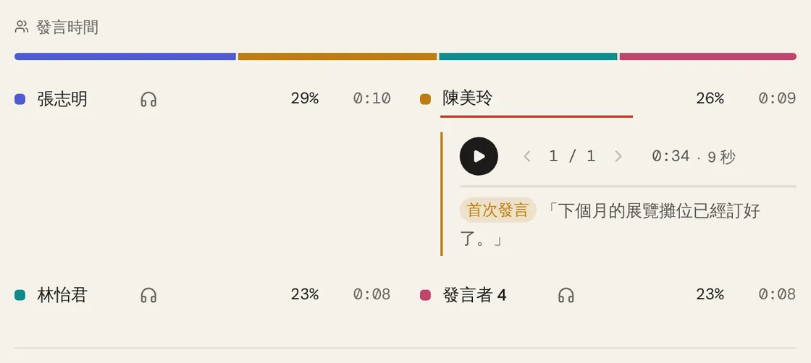
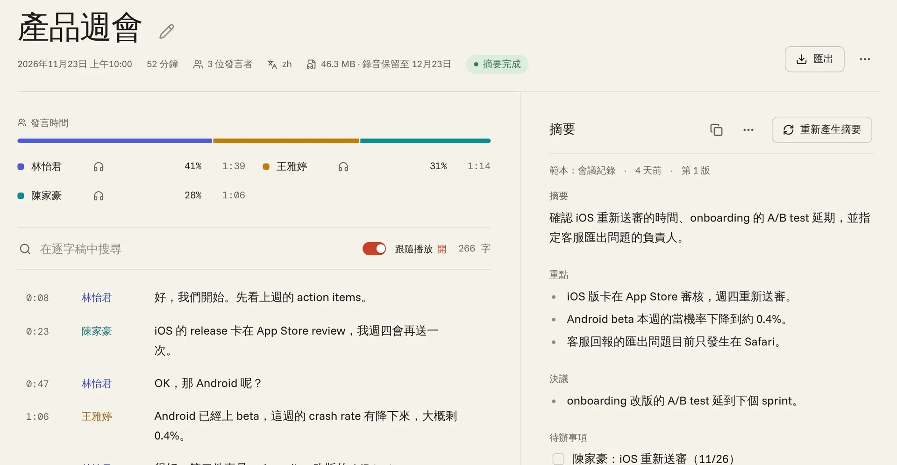
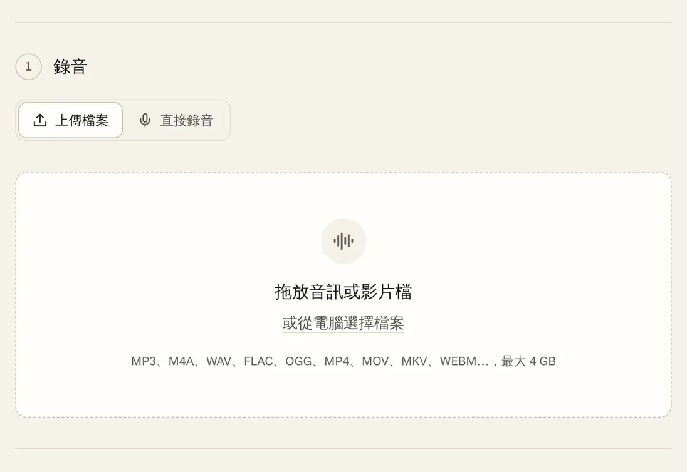
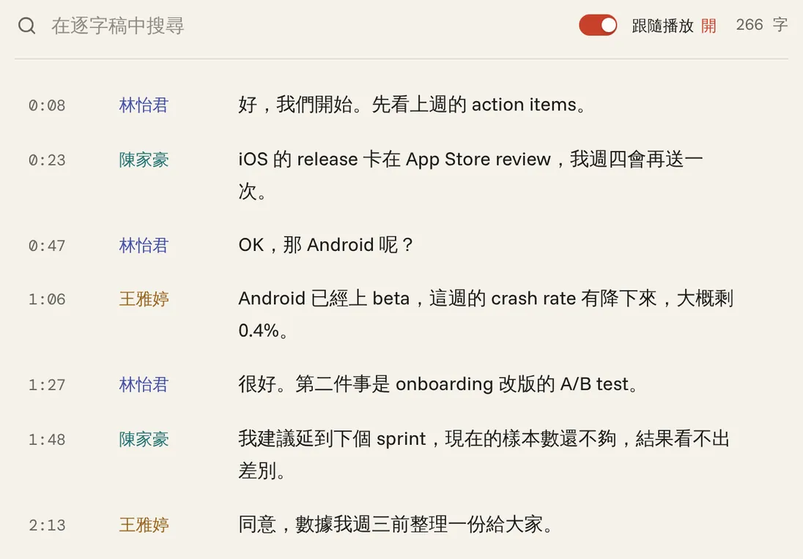
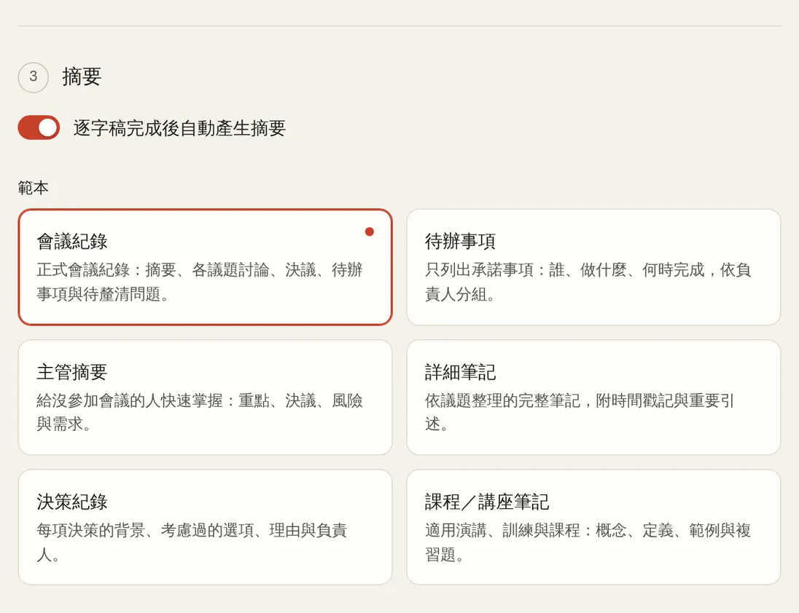
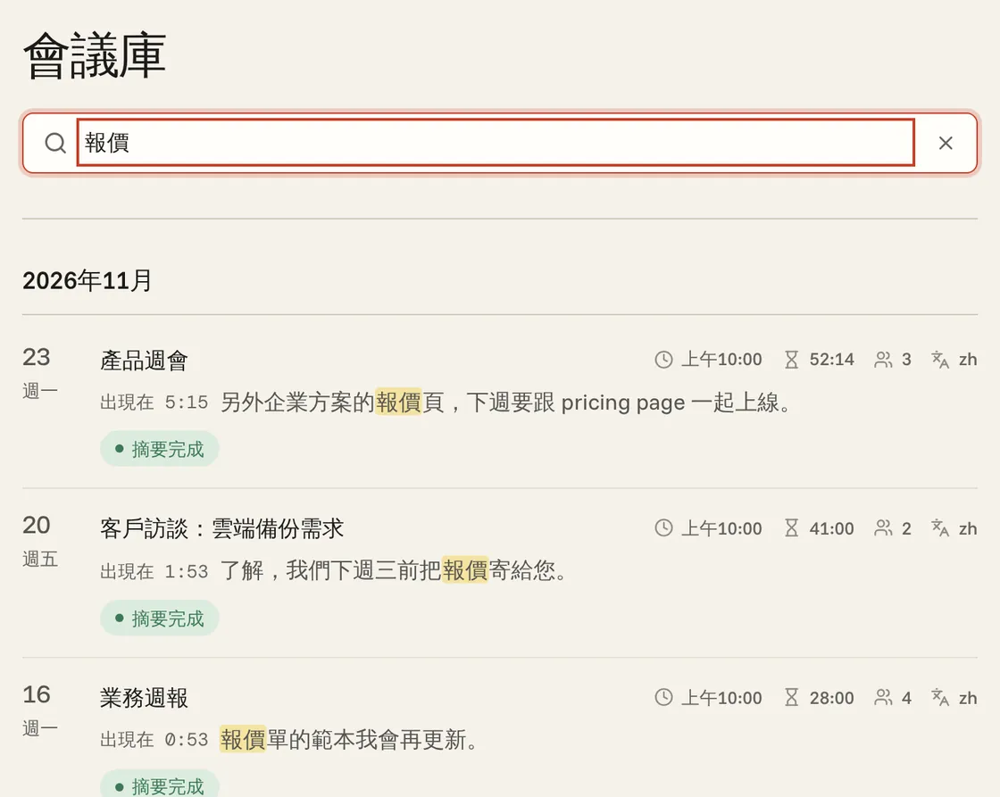
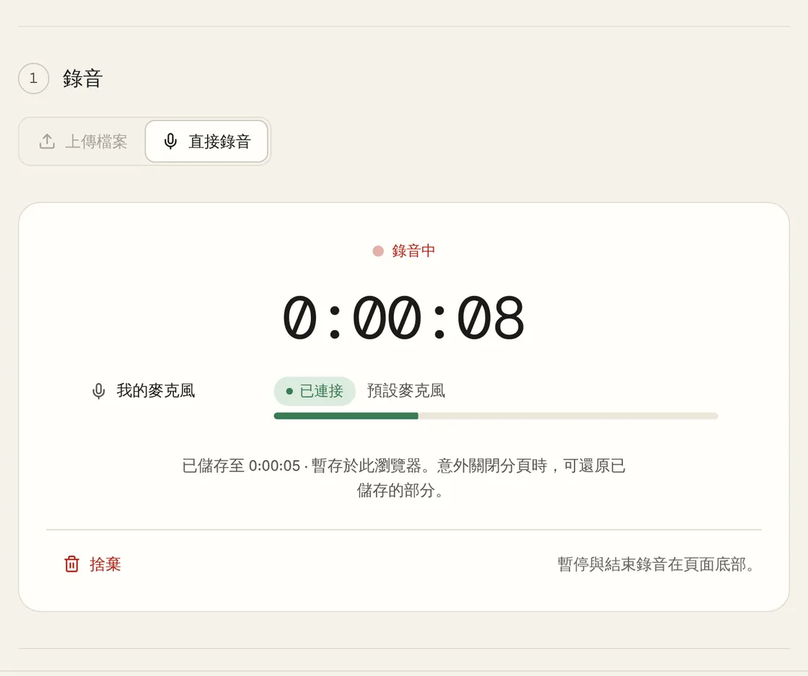
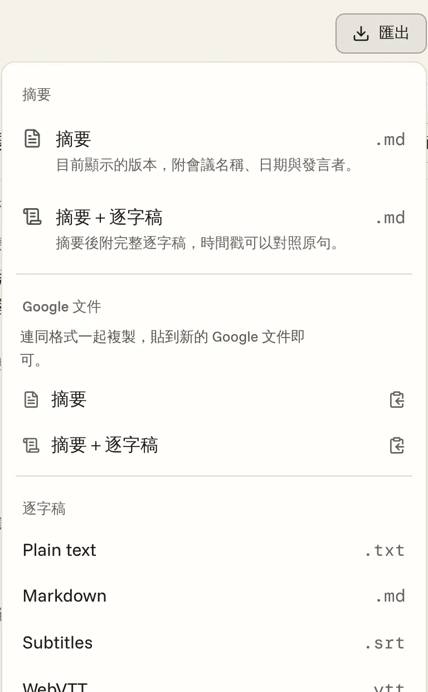

替每位發言者命名
系統先把不同的人標成「發言者 1」「發言者 2」，你可以替每一位填上名字。

左邊是發言時間和逐字稿，每句都有時間和發言者；右邊是照範本整理好的摘要、重點、決議和待辦事項。
查看三個步驟
會議結束後，把錄音或錄影檔上傳到 Minutes；開會時也可以直接在瀏覽器錄。

中文、英文和中英夾雜都能轉錄，每句附上時間；不同的人會自動分開標示。

選一個範本，Minutes 就照它把逐字稿整理成重點、決議和待辦事項。

系統先把不同的人標成「發言者 1」「發言者 2」，你可以替每一位填上名字。

所有會議的標題和逐字稿都能搜尋。輸入一個詞，就找到是哪一場會議、在第幾分鐘說的。

手邊沒有錄音檔也可以：開會時在瀏覽器錄下麥克風或線上會議分頁的聲音，錄完就送出轉錄。

摘要可以下載成 Markdown，或連同格式貼到 Google 文件；逐字稿另有 txt、srt 等格式。

計價方式
點數只扣在完成的轉錄和摘要上。轉錄依錄音長度按秒計算，摘要依讀寫的文字量（token）計算。
即將開放購買
每點 NT$1.00
購買 100 點每點 NT$0.90
購買 500 點每點 NT$0.80
購買 2,000 點目前沒有公開販售的方案，請聯絡我們。
轉錄每分鐘 1 點；摘要每 1,000 個輸入 token 0.1 點、每 1,000 個輸出 token 0.5 點。點數沒有使用期限。
付款在綠界科技（ECPay）的頁面完成，可用信用卡、ATM 轉帳或超商代碼。所有價格以新台幣（NT$）計價，已含稅。
查看完整方案與說明